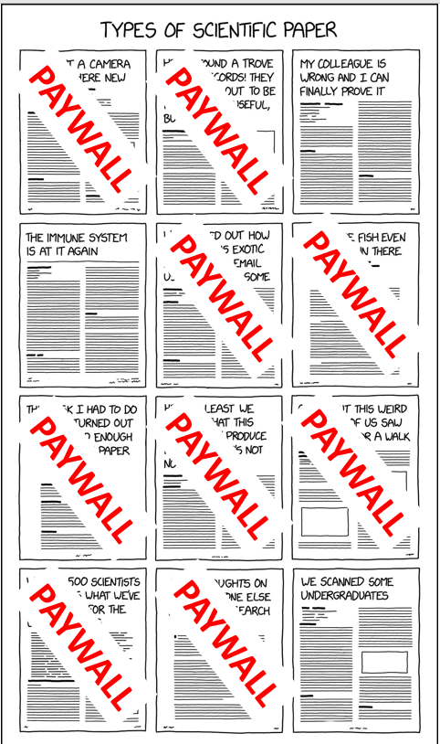
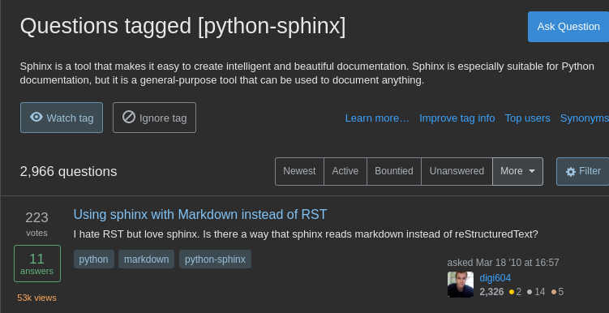
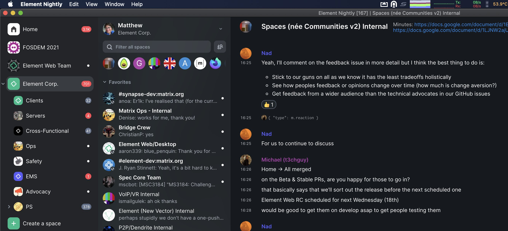
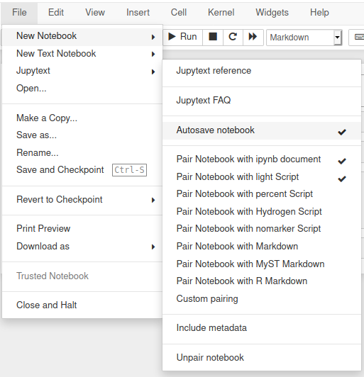
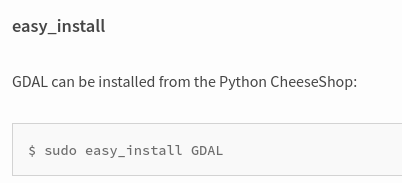
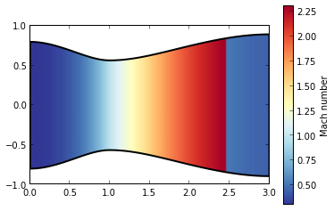
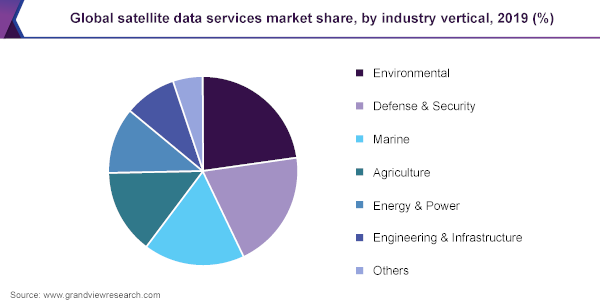

It's still black text over a white background. Not very appealing if you ask me, but the authors want it to be a showcase of docutils default, "raw" output.
RT @film_girl: With all the Basecamp discourse we haven’t even been able to talk about the actual like legitimately bad, like actually frau…
RT @lazerwalker: @film_girl The hand-wringing video where the Patreon CEO wants people to reassure him that doing a 10% round of layoffs tw…
Hola red, ¿conocéis comunidades de mujeres en JavaScript o desarrollo Frontend? Estamos buscando a alguien para @readthedocs en remoto y me gustaría difundir la oferta fuera de mi círculo. Cualquier enlace o ayuda es bienvenido. Los detalles están aquí https://blog.readthedocs.com/job-frontend/
Replying to @gilgamezh and @Nico
No more gilgamezh?
Replying to @EnriqueGonMora, @Pybonacci, @readthedocs and @Adalab_Digital
¡Gracias! Conozco @Adalab_Digital - no tenemos ahora mismo los recursos para contratar a una recién graduada lamentablemente, pero sí a alguien con un par de años de experiencia.
Replying to @MJBinaghi, @Pybonacci, @readthedocs and @asaditojs
🙀 ¡Gracias!
Replying to @gilgamezh
Me acabo de comprar uno 😂
Replying to @lbiedma17, @fisadev, @readthedocs, @lasdesistemas and @reactladiescba
¡Gracias ambos!
Replying to @fisadev, @insertefrase and @Pybonacci
Hola, lo sexista es ser 6 tipos en una empresa de 6 empleados. La búsqueda de mujeres es una iniciativa personal mía porque el olor a bolas ya se me hace insoportable 😉 Así que si conoces a alguna desarrolladora cualificada, ojalá le puedas compartir la información. ¡Un saludo!
RT @Linkita: A los que estáis haciendo pruebas técnicas, haced un README muy bueno por favor. Os dejo unos tips👇
Replying to @fisadev, @insertefrase and @Pybonacci
(Me corrijo: ¡6 tipos en una empresa de 7! Mientras hablaba, confirmamos la contratación de la primera mujer 🎉)
Replying to @insertefrase, @fisadev and @Pybonacci
No tengo tiempo para discutir estos temas contigo, lo siento - hay mucha información en Internet y tienes mucho que aprender. Un saludo.
Replying to @garedat and @readthedocs
Veo que son @Laboratoriala, ¡muchas gracias!
Replying to @lasdesistemas, @fisadev and @readthedocs
¡Muchas gracias! Puedo ampliar un poco la información que está ahí si me dais un medio de contacto :)
Replying to @angeek, @readthedocs and @VuevixensESP
¡Muchas gracias!
Replying to @helenismo23 and @readthedocs
¡Todavía está disponible sí! :) Te puedo ampliar un poco la información que está en la oferta si me das un medio de contacto. ¡Gracias
Replying to @keymetu, @readthedocs and @Technolatinas
¡Muchas gracias! 🙌🏼
Replying to @blogdeunnomada, @insertefrase and @Pybonacci
🤦🏼♂️Te veo muy informado, campeón. En 2014 a lo mejor me habría puesto a discutir contigo, mandarte enlaces, estudios, piezas de opinión para que vieses lo equivocado que estás. Pero llegas 7 años tarde a este debate y me das mucha pereza. Abre Google y de paso tu cabeza.
Replying to @the_fricky, @insertefrase, @fisadev and @Pybonacci
Replying to @Wolfchamane, @readthedocs and @Adalab_Digital
¡Gracias! He contactado con varias Adalabers de promociones anteriores en LinkedIn igualmente :) https://twitter.com/juanluisback/status/1388458409725472768
Replying to @goanpeca
I'm so sorry this is happening to you. My heart is with Colombia. Stay strong ✊🏼
RT @AndrewBarnas: I fixed the "Types of Scientific Paper" meme.

Replying to @zdealveindy and @AndrewBarnas
100 %.
- I'm an independent researcher, not affiliated with a University.
- The papers I'm interested in are either old, or unavailable on preprint.
- Many authors are just dead or they moved on to industry so they won't answer email.
I get them all from Sci-Hub, period.
Replying to @juanluisback
¡Muchas gracias a todo el mundo por las recomendaciones! Las he añadido a esta lista https://twitter.com/i/lists/1388449577943117826 y les estaré contactando a partir de mañana 🙌🏼
Replying to @zdealveindy and @AndrewBarnas
If I'm not mistaken, journals don't pay authors, and journals don't pay reviewers. So I don't see why should I pay journals. They only do dissemination and archival work these days, and paying ~30 USD for a 5-15 pages PDF is just outrageous, as they probably know already.
Replying to @zdealveindy and @AndrewBarnas
I do it with my savings on my free time.
Replying to @helenismo23 and @readthedocs
Ya te estoy siguiendo! :)
Replying to @rmoscosp, @readthedocs, @msinteech, @diana_nerd, @Marylin_AD, @MajoLedes and @soreygarcia
¡Muchas gracias!
Replying to @the_fricky, @insertefrase, @fisadev and @Pybonacci
¡No te gastes @the_fricky! Su ciencia es de la Universidad de Mis Huevos Al Viento y de ahí vienen sus estadísticas también. Con eruditos de este calibre no se puede discutir.
RT @pyblogsal: I will be streaming the release of Python 3.10 beta 1 🐍 tomorrow (3rd May) at 20:00 BST. Come and join us at https://t.co/1c…
Replying to @ericaandrearuiz, @readthedocs and @WWCodeMedellin
¡Muchas gracias!
The amount of scientific advances coming from @AerospacePoliMI and others in Astrodynamics is just amazing.
...And at the same time, we keep hitting $25 paywalls and we still don't have links to source code repositories up front.
I wish Academia had a deeper open source spirit. https://twitter.com/AerospacePoliMI/status/1389129361018826760
Replying to @juanluisback
Every time I read an Astrodynamics paper I'm like: "come on folks, those plots were clearly made using MATLAB. why don't you just publish the scripts? I know they're rough and ugly, but you used them to write this. they are part of it."
And of course, journals just don't help.
Replying to @DegenerateConic
You #FORTRAN programmers must be so much fun at parties 😝
Replying to @juanluisback
Journals, by the way, could be part of the solution. "As part of the review process, we demand authors to attach source code that helps the verification of the results claimed in this paper".
But what incentive do they have for it? They are making a shitload of money anyway.
Replying to @hpcprogrammer
I discovered this guy a mere 2 weeks ago and it's just amazing 😂
@Laboratoriala ¡Hola! Me gustaría saber si estaríais interesadas en difundir una oferta para nuestra empresa. Buscamos frontend con un par de años de experiencia, 100 % remoto (nos da igual la ubicación). ¿Me decís un método de contacto? ¡Gracias! https://twitter.com/juanluisback/status/1388444828632076292
@WTMMadrid ¡Hola! Creo que http://gdgmadrid.es ya no existe... Estaba buscando un medio para contactaros sobre https://twitter.com/juanluisback/status/1388444828632076292
Replying to @jezdez and @anacondainc
Congrats! So happy to see "the Django world" join forces with "the PyData world" :)
Replying to @JABrugger, @insertefrase, @Pybonacci and @readthedocs
Hola campeón, te veo bastante desubicado. Al difundir la oferta en comunidades de mujeres, lo que quiero es que haya mujeres que apliquen. Lo de "voy a contratar a una mujer por ser mujer" lo dijiste tú, no yo. Te digo lo mismo que al resto: infórmate mejor sobre este tema.
Replying to @AnaWhitewolf, @readthedocs, @Adalab_Digital, @NodeGirlsMadrid, @VuevixensESP and @os_weekends
¡Muchas gracias @AnaWhitewolf ! Me las han recomendado en otras respuestas, pero al ser Node.js y Vue.js no me quedaba claro si aceptaban ofertas que usasen otras tecnologías 😅 Usamos Knockout, Semantic UI, Sass, webpack. No tengo mucha idea como se ve :) ¡bienvenida toda ayuda!
Replying to @VuevixensESP, @AnaWhitewolf, @readthedocs, @Adalab_Digital, @NodeGirlsMadrid and @os_weekends
¡Gracias!
@CristinaGrim 👋🏼 ¡Gracias por seguirme y por la difusión! Por cierto, te escribí por LinkedIn :)
RT @jiboncom: ¡Wow!, @SymPy puede entender LaTeX y luego puede manipularlo. Por ejemplo, para sacar una derivada. ¡Esto ahorra muchísimo ti…
"Dime el nombre de los hijos
La palabra lastimada en mitad de la boca
Extrae la fuerza de la voz por encima de los fusiles
Que reescriben sus enigmas de matanza inútil
En los meses sin circo
La palabra de cobre en vuestros muslos
Eternamente herida y sola"
#SOSColombia 💔
"Getting Started" as the Minimum Viable Tutorial 💯
@juanitagomezr ¡Hola! 👋🏼 Acabo de leer que en la documentación de @Spyder_IDE tenéis vídeos incluidos, ¡no lo sabía! (hace un tiempo que no uso Spyder), ¿tenéis datos de qué tal están funcionando? Me da la sensación de que la gente joven es más de vídeo que de texto :)
RT @readthedocs: We are pleased to share with you our May newsletter. Highlights: Ra is joining us as Account Manager for ads, we deprecate…
RT @youyuxi: Writing the docs always takes longer than you think 😬
RT @hynek: All right everybody, the much-teased attrs 21.1.0 has just landed and it’s HUGE: pyright/pylance support, __attrs_pre_init__/__a…
Interesting to see what's the most upvoted Sphinx question on Stack Overflow...

Replying to @driscollis
Yes, it's called https://myst-parser.readthedocs.io/ :) But it's very new (2020) and most people don't know it. That question deserves a more up to date answer (might write it myself if I have the time)
Read this thanks to @pythonbytes, amazing project! Very similar to CDpedia by @PythonArgentina https://twitter.com/builtinafrica_/status/1303325031817244673
Replying to @lais_bsc
I don't want to send angry crowds anywhere, but apparently not everybody agrees with this... 😅
Replying to @christi3k
I've found myself sharing this way too often https://heyguys.cc/ I wonder why is it so difficult to understand...
Tomorrow it's @Bandcamp Friday 🌸 Support your favourite artists! https://isitbandcampfriday.com/
Replying to @zdealveindy and @AndrewBarnas
Peer review is so broken I don't even know how there are still people around defending journals, quite honestly. See this thread about a software paper that excluded its main creator. How did this pass a review? How is @ElsevierConnect charging for this? https://twitter.com/petebankhead/status/1357697517815816193
RT @rcalsaverini: @fchollet There's a ton about a science that is not contained in it's tools.
Almost all physics today is already done on…
A common mistake AI superstars on Twitter make: not tolerate well reasoned criticism on their bad takes. https://twitter.com/fchollet/status/1389727399579844609
RT @khinsen: Dear computer scientists,
please put aside your hubris and dreams of world dominance, and help us computational scientists ma…
This is how looking for a remote Frontend Developer for @readthedocs looks like 🙈
RT @plaindocs: PSA Yes it is Bandcamp Friday.
Replying to @pradyunsg and @readthedocs
Didn't know that one, thanks! To be honest, I was avoiding UX/Frontend *generic* communities at first because I would like to have a high percentage of women and non-white people applying, and so I was reaching out to them directly. But will keep this in mind just in case.
RT @poliastro_py: The first (and hopefully only) beta of poliastro 0.15 is out! 📢 Please help us testing it doing
pip install --upgrade "p…
Replying to @emilywselwood and @poliastro_py
Will be ready in ~2 minutes :)
Replying to @emilywselwood and @poliastro_py
Ready!
This is super awesome! Also: docstrings in Markdown? 😏 https://twitter.com/Mbussonn/status/1390751154842177536
RT @drvinceknight: Have added a discussion page to the documentation of Nashpy going over how to setup
@readthedocs
to build documentatio…
Replying to @Mbussonn and @quansightai
Interesting! Do I understand correctly that you are using @stsewd tree-sitter-rst to parse reST from docstrings? Could you comment more on that?
RT @poliastro_py: Our April updates are online! https://www.poliastro.space/blog/2021/05/08/april-updates/
Upcoming 0.15 release, documentation updates, validation work fini…
RT @esc___: Details and equality matter -- TIL: 'conda install python==3.8` will get you 3.8.0 exactly -- whereas 'conda install python=3.8…
¿Ya no actualizáis el plano de calles tranquilas @enbicipormadrid? 😢
Replying to @jljcolorado and @TheLancet
Compartí en LinkedIn un resumen rapidísimo https://www.linkedin.com/posts/juanluiscanor_jose-luis-jimenez-on-twitter-activity-6797122158234525696-H4U- muchísimas gracias por compartir
Extremely insightful.
A quick takeaway: peer-review is imperfect. Scientists are humans, and make mistakes - many times because of their biases, or mundane reasons (like grant money for research). International bodies like @WHO reflect these imperfections.
We must do better. https://twitter.com/jljcolorado/status/1383566908797059078
RT @tk0miya: I just bumped Sphinx-4.0.0! It includes many new features and bug fixes. Please try it! Thank you for all maintainers, contrib…
Replying to @enbicipormadrid
¡Gracias!
Replying to @noatamir, @WiMLDS_Berlin, @numpy_team and @MentoredSprints
I just learned about this, congratulations for the success! How can I stay tuned for similar initiatives in the future? Thanks a lot 😊
Replying to @noatamir, @WiMLDS_Berlin, @numpy_team and @MentoredSprints
Thanks again 🙌🏼
Replying to @fisadev
Same energy https://twitter.com/santiagomayer_/status/1391474962498686976
RT @element_hq: @matrixdotorg @whitequark sneak peek of Spaces operating as hierarchical sets of rooms, fwiw:

RT @tk0miya: I released Sphinx-4.0.1. It contains some bug fixes. So I recommend you to update your Sphinx. Enjoy documentation! #sphinxdoc…
RT @documattcom: 👉 How to debug Sphinx doc extension with @code (and even without it) 👈#writethedocs https://techwriter.documatt.com/2021/debug-sphinx-extension.html
Replying to @jasoncwarner
I don't understand this list either. Email has very shitty global search capabilities, includes too much ceremony, and hinders clear communication. I have found Slack to be a major productivity boost, but perhaps because I was in a company of ~200 and I interacted with ~30. YMMV.
Replying to @lais_bsc
Congratulations! 👏🏼
RT @NKondjashili: We are hosting a virtual PyCon this year. All talks, workshops and tutorials will be hosted online by various speakers fr…
RT @QuentinDeforge: I struggled for several hours then I did this @ringo_ring #Science
Replying to @HelenaBlunt, @fuera_d_orbita and @bekaesh
Oh, no conocía el podcast! Voy a pegarle una escuchada, gracias por el ping :) Mi alter-ego espacial es @poliastro_py
Replying to @Divya_M_P
Waaaaaaat!! I was using a custom extension for this. Now I'll be using uBlock everywhere! Thanks for the tip!
RT @theRealRa42: Be the style guide you want to see in the world.
RT @fisadev: Estamos buscando una persona para sumarse al equipo en el que trabajo! (hoy somos 2)
Programamos el planner de la flota de sa…
Replying to @melissawm
Thanks for these courageous words. Because of the work we do and the geographic bias of people we follow on social media, I think it's easy to get a "distorted" vision of the world in general, and gender issues in particular.
RT @paperswithcode: 🎉 Introducing Datasets on arXiv! 🎉
The new "Code & Data" tab shows datasets used and introduced in the paper!
Read mo…
Replying to @pganssle, @pwang and @glyph
That, and projects everybody uses as transitive dependencies not seeing their value properly recognized https://xkcd.com/2347/
I also fail to see how decentralized trust solves these issues.
RT @paulweveritt: Mega-contrats to @tk0miya for this release and all the *VERY* hard work on Sphinx over the many years. A real Python hero…
RT @poliastro_py: 📢 poliastro 0.15.0 is available! 🎉
Tisserand plots, Earth groundtrack plots, new visibility and ground range functions..…
Replying to @CSIngobernable
Hola, haciendo un poco de arqueología parece que la versión original de esta imagen es CC BY-NC-SA. https://web.archive.org/web/20140410075417/http://autoconsulta.org/mutaciones.php Nos tenemos que poner las pilas y respetar las licencias 😉 ¡Salud!
RT @__daetam__: .@ProjectJupyter has been mentioned/shown in 80% of the talks I've seen so far at @pycon 2021. Data is the future! Come joi…
Replying to @paulweveritt
I guess you meant https://www.jetbrains.com/pycharm/guide/tutorials/sphinx_sites/ ? :) (@ericholscher is attending PyCon US and pointed me to it)
It looks really great, congrats! 👏🏼
Replying to @_MsLinda
Frontend or Technical Writing? :) Congrats!
Replying to @PyConES
Al final me animé :P
Today is one of those days.
RT @pdp7: 🐧📣 @RISC_V International is giving away Linux-capable RISC-V boards to open source developers, with the first round happening soo…
Replying to @yuvipanda
Especially given this subthread https://twitter.com/williamspatrick/status/1392667489453101056
Replying to @reydelhumo, @quimer4 and @ralsina
10 tranquilo! tengo buenos pulmones :P
RT @ladekale: looking to speak to a few people that work remotely for foreign companies from nigeria. please like this if you’re one & i’ll…
Replying to @sethmlarson
Is the deadsnakes PPA by @codewithanthony affected as well?
Replying to @codewithanthony and @sethmlarson
Thanks for the clarification and for deadsnakes! You rock 🙌🏼
RT @readthedocs: Your project needs extra system libraries to build its documentation? Now you can specify them directly! Read more in our…
Replying to @josesmachava, @juanfunez, @fmasanori and @PyConNA
May I ask why? 😕
RT @pradyunsg: cibuildwheel is now a member project of @ThePyPA!
https://github.com/pypa/cibuildwheel
Replying to @bitecode_dev and @gvanrossum
"I'm _not_ sure", I guess?
RT @tk0miya: Sphinx-4.0.2 is out now! #sphinxdoc #sphinxjp
This seems to imply that Python is ignoring WebAssembly... but is it? https://hacks.mozilla.org/2021/04/pyodide-spin-out-and-0-17-release/ https://twitter.com/brettsky/status/1395463470443687937
Replying to @aalvarez_96
Puf qué corta anda la gente de comprensión lectora...
Replying to @tanvibhakta_
At @readthedocs we're hiring for a Frontend role, design skills and Django exposure desired :) https://blog.readthedocs.com/job-frontend/ I'm following you, feel free to DM for details
RT @FPappenberger: New @ECMWF #Metview #Python documentation published @readthedocs! This new documentation features a new set of Gallery e…
Listening to the first album I ever bought on @Bandcamp : Rabo de Toro by @rabodetoropunk 🧷
https://rabodetoro.bandcamp.com/album/rabo-de-toro-the-album
RT @mitsuhiko: What you’re refering to as Linux, is in fact, systemd/Linux, or as I’ve recently taken to calling it, systemd plus Linux. Li…
Replying to @reydelhumo
No lo he leído, pero me pregunto si https://basecamp.com/books/getting-real estará traducido
Replying to @reydelhumo
Y si se van a caer, usen protecciones... (este soy yo después de varios puntos de sutura hace unos años) ¡ánimo! 🩹
Changing jobs is very hard, more so in the middle of a global pandemic. I am happy I am about to finish a project I committed to doing a long time ago. If you want to see some cool space math, have a look: https://twitter.com/poliastro_py/status/1346802893572202498
Replying to @choldgraf
What happened to JMarkdown? :) stumbled upon https://github.com/executablebooks/meta/pull/9 today
Replying to @paulweveritt
What do you think is the role of Transcrypt in a post-pyodide world? https://hacks.mozilla.org/2021/04/pyodide-spin-out-and-0-17-release/
Replying to @choldgraf
Hah, makes sense! :D
Are you looking for an #rmarkdown equivalent for Python?
Look no more! Use jupytext to pair your Jupyter notebooks to MyST Markdown format. Here's how:
https://jupytext.readthedocs.io/en/latest/paired-notebooks.html

Replying to @choldgraf
Sounds good to me. This bottom-up approach has allowed more projects to adopt markdown-it-py sooner, and I think MyST will take over the world in a matter of time :)
Replying to @choldgraf, @powersoffour and @yuvipanda
https://youtu.be/eZBDhJ-GWFQ
Replying to @JennaSys and @paulweveritt
Nice, that was not clear to me as bystander. Thanks a lot for the explanation!
RT @MissingClara: pypa/build 0.4.0 released 🎉 it introduces quite a few changes, so I would recommend you to check out the changelog, espec…
A bit of a random question: what does the experience of using Kahoot in online events look like? I am worried about the streaming delay having a negative effect... Although, if it's the same for everybody, perhaps it's not an issue? 🤔 (Asking for a Hopin event in particular)
RT @writethedocs: We've published the talk videos and sketchnotes for our Portland conference in our archive. You can see all the talks her…

Replying to @pwang
Who's "our"? That's the question, I guess.
Replying to @facundobatista
Enhorabuena 👏🏼 Visto que lo revisó una abogada, ¿cómo de extrapolable (en términos legales) es este texto a otros países?
RT @ddbeck: You can use the second person in your docs. It's fine, I promise. https://ddbeck.com/second-person-is-ok/
What was the first documentation project you created in Sphinx?
I start: scikit-aero, a small Python library I made in 2013 for my Aerothermodynamics class (still online! https://scikit-aero.readthedocs.io/en/latest/examples/Convergent-divergent%20nozzle.html)

RT @Daniel_LubAr: @juanluisback @nanostarproject methodology docs! Hosted on Gitlab ;)
https://nanostar-project.gitlab.io/main/
RT @reydelhumo: @juanluisback Spanish translation of virtualenvwrapper in 2012: https://virtualenvwrapper-docs-es.readthedocs.io/es/latest/
RT @gjbernat: 📰 pipx has now officially joined the PyPA - https://github.com/pypa/pipx 🗞 as such the documentation for it can be found under htt…
RT @ddbeck: It's the last Thursday of the month, which is a great time to write that README you've been putting off https://github.com/ddbeck/readme-checklist
RT @PyConNA: #PyConNamibia 2021 seeks your support. if you're interested in sponsoring us.
Visit us at https://na.pycon.org/sponsorship/ or Speak to…
Replying to @newlawrence and @Alex__S12
Qué recuerdos 😍
RT @NumFOCUS: Please join NumFOCUS in welcoming our newest projects to our fiscally sponsored program, LFortran and NetworkX!
We are regul…
Replying to @plotlygraphs, @Replit, @amasad, @mybinderteam, @GoogleColab and @CodePen
Hey, I'm a big fan of @plotlygraphs, been using it for the past half-decade to show 3D orbital plots. However, this tweet is very weird. Was it necessary to shade @mybinderteam ? Did you open an issue on their repository pointing to specific performance issues?
Replying to @plotlygraphs, @Replit, @amasad, @mybinderteam, @GoogleColab and @CodePen
It's not the end of the world, but please do better next time.
RT @kph3k: My 6-year-old, working on a bead design: “Do you want to help me?”
My 8-year-old: “Yes. Do you want me to follow your directio…
Agnieszka Lukaszczyk from @planet at #ESGW2021 "it's not true that defence & intelligence is the biggest client of satellite imagery, but agriculture"
Planet is an outlier then! https://www.grandviewresearch.com/industry-analysis/satellite-data-services-market

Replying to @juanluisback
I expected a more honest answer to be fair, something like "yes, D&I has big pockets, but yadda yadda". Not such a dismissive comment.
Replying to @juanluisback
And also, @mouthofmorrison is misguided here I assume! https://joemorrison.medium.com/the-commercial-satellite-imagery-business-model-is-broken-6f0e437ec29d
Replying to @WillPettersson and @readthedocs
Congrats! If you have any comments on the experience, let us know :)
Replying to @webknjaz and @ThePyPA
I hope I didn't say anything super wrong...
RT @plotlygraphs: @choldgraf You're right. This tweet was needlessly negative and dismissive of the important work you and everyone else on…
Replying to @plotlygraphs, @Replit, @amasad, @mybinderteam, @GoogleColab and @CodePen
Thanks @plotlygraphs https://twitter.com/plotlygraphs/status/1398375563832836099
Replying to @pradyunsg, @pganssle, @webknjaz and @ThePyPA
Thanks for the clarification. I think this "PyPAuthority is not an Authority" thing has been discussed in Discourse several times, but I fell victim to it again because of my enthusiasm, so I deleted the tweet to avoid further confusion.
Replying to @melissawm
This is actually... very accurate 😰
In fact, it makes me think that the value of the elaborate response to bad takes is in _writing_ it, rather than publishing it. And as a result, I find myself writing in a private notebook or diary more and more these days.
RT @agfitzp: @_brohrer_ @vboykis “Debugging is twice as hard as writing the code in the first place. Therefore, if you write the code as cl…
Replying to @RexChapman
This appeared in my TL while I was listening to "Inward Singing" 😂
Replying to @glrodasz
✋🏼😁 https://github.com/astrojuanlu/ (mis compañeros @reydelhumo https://github.com/humitos y @stsewd https://github.com/stsewd creo que no están en GH Sponsors)
RT @glrodasz: ¿Conocen desarrolladoras o desarrolladores en Español que esten contribuyendo full/part time a código open source en GitHub?…
How do you call your Python virtual environments?